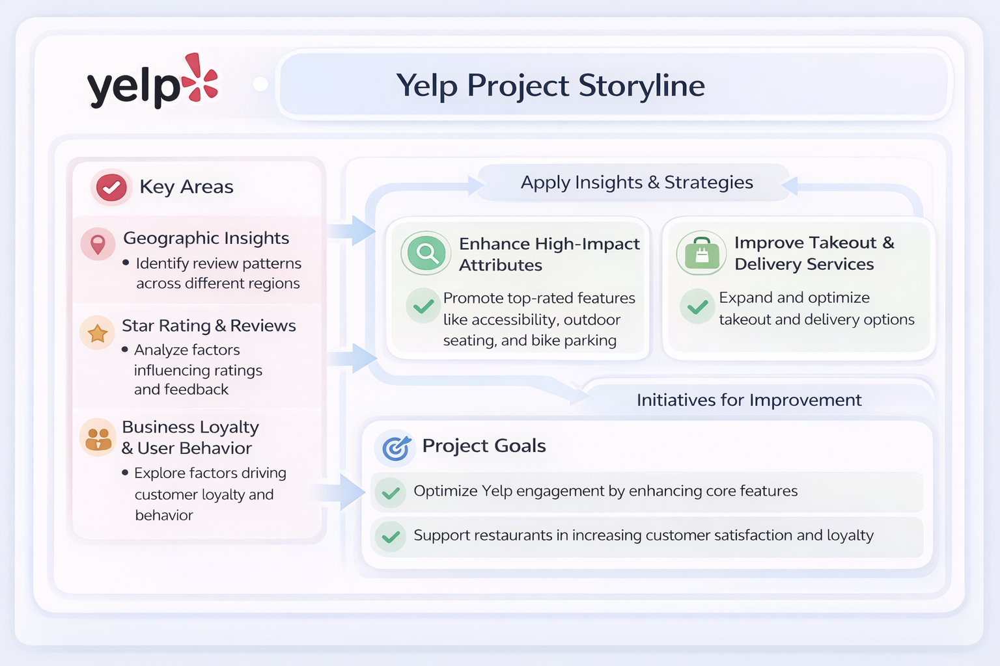
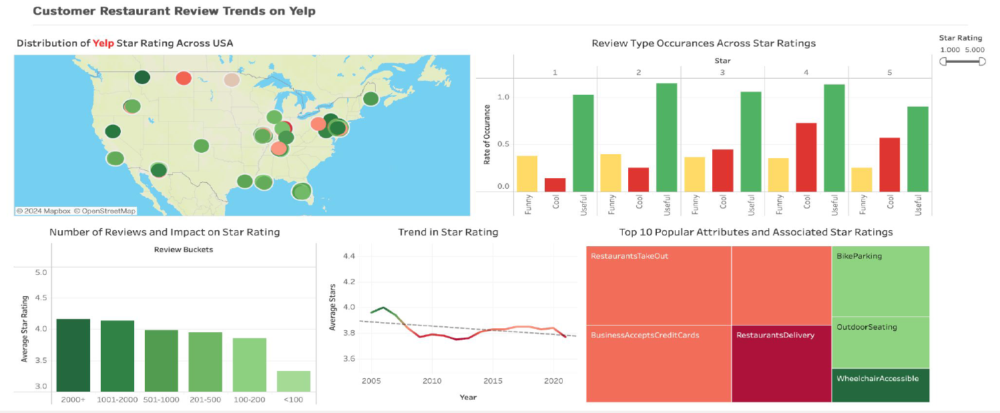

restaurant analytics case study
Leveraging U.S. Yelp Trends to Support Restaurant Owners
— A BigQuery-driven analysis of Yelp data to turn review signals into practical business actions.

Overview / Description
Restaurant owners often face data fatigue when trying to interpret large volumes of online customer feedback. Our team analyzed the Yelp Open Dataset to identify which operational areas most strongly affect ratings, customer sentiment, and digital reputation.
Objective / Success Metrics
Use large-scale restaurant review and business data to identify the patterns that most influence engagement and customer satisfaction, then translate those findings into actionable business recommendations.
Approach
- Used Google Cloud Platform BigQuery to clean and analyze data across Business, Review, User, and Tip tables.
- Filtered raw data to isolate valid U.S. restaurant and food establishment records.
- Used advanced SQL functions such as EXTRACT and JSON_EXTRACT_SCALAR to analyze business attributes including parking, accessibility, reservations, and delivery.

Results / Key Findings
1) Elite users have outsized influence
- Elite users wrote an average of 396 reviews compared with 34 for non-elite users and received far more useful and cool votes.
2) Long negative reviews are common
- Reviews with 500+ words were strongly associated with lower ratings.
3) Certain business attributes strongly affect ratings
- Top-rated attributes included wheelchair accessibility, outdoor seating, and bike parking.
- Lower-rated attributes included restaurants delivery and HasTV.
Impact / Conclusion / Recommendations
- Optimize staffing and service quality during peak review windows such as Sundays and Wednesdays.
- Prioritize accessibility improvements over low-value entertainment features.
- Improve packaging and third-party logistics for delivery.
- Use QR codes or other tactics to encourage satisfied dine-in customers to leave positive reviews.